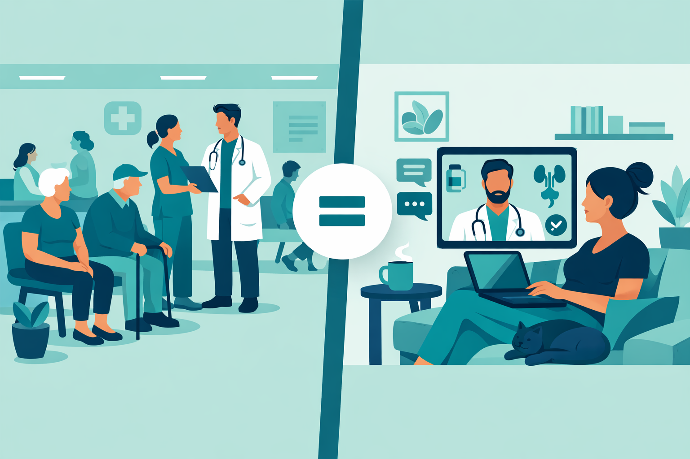

Key Takeaways
- Large-scale studies show 89.5% symptom resolution for UTIs treated via telehealth — comparable to in-person standard of care.[1]
- Telehealth physicians in UTI programs demonstrate 94% adherence to IDSA antibiotic prescribing guidelines — higher than many in-person benchmarks.[1]
- Patients with both uncomplicated and complicated UTI symptoms can be effectively triaged through virtual visits when proper screening protocols are followed.
- Three new antibiotics received FDA approval for UTIs in 2024–2025 (pivmecillinam, gepotidacin, sulopenem), expanding treatment options available through telehealth.[4][5][6]
- The quality of a virtual UTI visit depends on the physician's training and clinical judgment — not the visit modality itself.
Why UTIs Are Well-Suited for Telehealth
Of all the conditions I treat, UTIs may be the single best fit for telehealth-based care. The reason is straightforward: UTI diagnosis in otherwise healthy women relies almost entirely on patient-reported symptoms, not physical examination findings.
The classic triad — burning with urination, increased urinary frequency, and urgency — carries a positive predictive value above 90% for uncomplicated UTI in premenopausal women. That means when a patient describes those symptoms clearly, we can be highly confident in the diagnosis before any lab test is ordered. Urinalysis can confirm the clinical picture, but in straightforward cases, it rarely changes the treatment decision.
The Infectious Diseases Society of America (IDSA) guidelines already reflect this reality. They endorse empirical antibiotic treatment based on symptoms alone for uncomplicated presentations in non-pregnant women aged 18–65 with no relevant comorbidities. The guideline doesn't distinguish between a history taken in a clinic room and one taken over a secure video call — because the clinical information gathered is identical.
What matters is the thoroughness of that history. A skilled physician asks about symptom duration, severity, associated symptoms (fever, flank pain, nausea), sexual history, contraceptive use, prior UTI episodes, recent antibiotic use, allergies, and pregnancy status. Every one of those questions works just as well through a screen as it does across an exam table.
What the Research Shows: Real-World Outcomes
Skepticism about telehealth-delivered UTI care is reasonable — any new care model should earn trust through data, not assumptions. Fortunately, several large studies have now examined outcomes in telehealth UTI programs, and the findings are consistent.
The most substantial dataset comes from a 2023 analysis published in PLOS ONE, which evaluated a national telehealth UTI program treating 51,474 women between 2017 and 2021.[1] The results were notable on several fronts: overall symptom resolution reached 89.5%, which is statistically similar to published in-person resolution rates. Only 2.2% of patients returned within 30 days for a repeat visit — a number that argues against the concern that telehealth "misses" diagnoses that then bounce back. Perhaps most striking, the program's physicians adhered to IDSA-recommended antibiotic protocols in 94% of encounters — a rate that exceeds many published in-person benchmarks.
That same study broke new ground by including patients who reported symptoms of complicated UTIs (fever, nausea) and vaginal infections — populations typically excluded from telehealth programs. Resolution rates among this group (87.9%) remained comparable to the uncomplicated cohort (90.8%), suggesting that experienced telehealth physicians can effectively triage these more complex presentations.[1]
A 2026 systematic review in PLOS Digital Health examined antibiotic prescribing practices across 18 studies comparing virtual and in-person care.[2] The majority found no significant difference in prescribing rates between modalities. Two studies actually reported that virtual visits were more likely to result in guideline-concordant antibiotic selection — potentially because telehealth platforms can integrate clinical decision support tools directly into the visit workflow.

| Study | Sample Size | Key Finding | Year |
|---|---|---|---|
| Daumeyer et al., PLOS ONE[1] | 51,474 women | 89.5% symptom resolution; 94% IDSA guideline adherence | 2023 |
| PLOS Digital Health Review[2] | 18 studies pooled | No significant difference in prescribing rates between virtual and in-person | 2026 |
| Martinez et al., J Gen Intern Med[3] | 389 encounters | Guideline-concordant care in direct-to-consumer telemedicine | 2019 |
The Physician Factor: Why Board Certification Matters
The data above reflects programs staffed by licensed physicians. That distinction matters more than most patients realize. The quality of a virtual UTI visit doesn't depend on the technology — it depends entirely on the person behind the screen.
A board-certified physician conducting a telehealth UTI evaluation performs the same systematic assessment as they would in a clinic: asking about symptom timeline, location, severity, aggravating factors, associated systemic symptoms (fever, chills, flank pain), sexual history, contraceptive method, prior UTI frequency, recent antibiotic exposure, drug allergies, and pregnancy status. That structured clinical reasoning is what separates a safe telehealth encounter from a risky one. It's also what distinguishes a physician-led visit from an AI chatbot or algorithm-only platform.
In my practice, I think of telehealth UTI care as having two parts: recognizing what I can treat virtually, and recognizing what I should not. Red flags that prompt me to redirect a patient to in-person or emergency care include fever above 101°F, flank or costovertebral angle pain (suggesting kidney involvement), nausea or vomiting, pregnancy, immunosuppression, symptoms in male patients, failed prior antibiotic courses, and symptoms lasting longer than seven days. A trained physician catches these in the first two minutes of conversation — the same two minutes that would unfold in a brick-and-mortar office.
The bottom line: the visit modality is secondary. What protects patients is the physician's ability to gather a reliable history, interpret it through clinical experience, and know when to escalate. That skill set doesn't change when the consultation happens over video.
New Treatment Options: FDA-Approved UTI Antibiotics (2024–2025)
One of the challenges in UTI management has been a stagnant antibiotic pipeline. For over two decades, the same small group of first-line agents — nitrofurantoin, trimethoprim-sulfamethoxazole, fosfomycin — carried the bulk of uncomplicated UTI treatment. That changed significantly in 2024 and 2025, with three new FDA approvals expanding the treatment toolkit.
| Drug (Brand) | FDA Approved | Class | Key Data |
|---|---|---|---|
| Pivmecillinam (Pivya) | April 2024[4] | Beta-lactam (mecillinam prodrug) | Used in Europe for 40+ years. 62% composite response vs. 10% placebo. Only oral beta-lactam recommended as first-line by IDSA.[7] |
| Gepotidacin (Blujepa) | March 2025[5] | Triazaacenaphthylene (first-in-class) | First new antibiotic class for UTIs in ~30 years. Non-inferior to nitrofurantoin in EAGLE-2. Showed superiority in EAGLE-3 (58.5% vs. 43.6%). Active against resistant phenotypes. |
| Sulopenem (Orlynvah) | October 2024[6] | Oral carbapenem (with probenecid) | For patients with limited alternatives. Effective against ciprofloxacin-resistant pathogens (48% vs. 33% response). |
All three of these medications can be prescribed during a telehealth visit. This is particularly relevant for patients dealing with resistant organisms or recurrent UTIs who may have failed standard first-line therapy — exactly the cases where having more antibiotic options makes a practical difference in patient care.
When Telehealth Is — and Isn't — Appropriate for UTIs
Not every UTI belongs in a virtual visit. Knowing the boundary is part of responsible telehealth practice.
Appropriate for Virtual Evaluation
- Classic lower urinary tract symptoms (burning, frequency, urgency)
- Recurrent UTI with a known pattern and prior treatment history
- Non-pregnant, healthy women aged 18–65
- Need for antibiotic prescription adjustment or follow-up
- No fever, flank pain, or systemic symptoms
Seek In-Person or Emergency Care
- Fever above 101°F (38.3°C) or chills
- Flank pain or back pain (possible kidney involvement)
- Nausea, vomiting, or inability to keep fluids down
- Pregnancy or suspected pregnancy
- Visible blood in urine (gross hematuria)
- Symptoms in male patients
- Immunocompromised status
- Failed prior antibiotic course
- Symptoms lasting longer than 7 days
- Confusion or altered mental status
The evidence at this point is clear: for uncomplicated UTIs, virtual care delivered by a qualified physician produces results on par with in-person visits. The diagnosis depends on a thorough history. The treatment follows established guidelines. The outcomes hold up under scrutiny in large, published datasets. What makes the difference is the physician's training, their clinical reasoning, and their willingness to escalate when the clinical picture warrants it — not whether the visit happens over video or across an exam table.
References
- Daumeyer NM, Gavin KM, Kreitzberg D, Bauer T. "Real-world evidence: Telemedicine for complicated cases of urinary tract infection." PLOS ONE. 2023;18(2):e0280386. pmc.ncbi.nlm.nih.gov
- "The impact of virtual care on drug prescribing practices: A systematic review." PLOS Digital Health. 2026;5(1):e0001192. pmc.ncbi.nlm.nih.gov
- Martinez KA, Rothberg MB, Rood MN, Gupta N, Rastogi R. "Management of Urinary Tract Infections in Direct to Consumer Telemedicine." J Gen Intern Med. 2020;35(3):643-648. pmc.ncbi.nlm.nih.gov
- U.S. Food and Drug Administration. "FDA Approves New Treatment for Uncomplicated Urinary Tract Infections" (Pivya). April 24, 2024. fda.gov
- GSK. "Blujepa (gepotidacin) approved by US FDA for treatment of uncomplicated urinary tract infections." March 25, 2025. us.gsk.com
- U.S. Food and Drug Administration. "FDA Approves New Treatment for Women with Uncomplicated UTIs" (Orlynvah/sulopenem). October 24, 2024. fda.gov
- "Pivmecillinam for Treatment of Uncomplicated Urinary Tract Infection: New Efficacy Analysis." Clin Infect Dis. 2025;81(5):e285. academic.oup.com